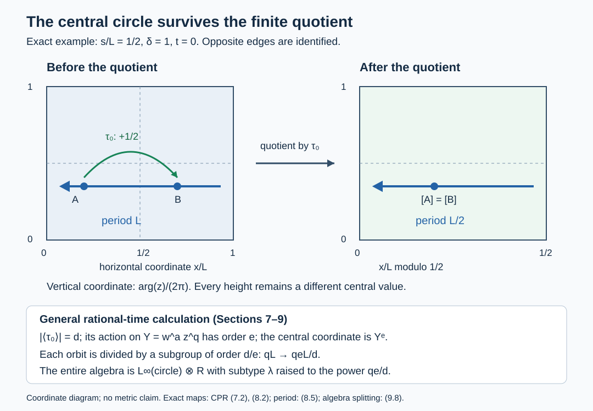

Crossed products from modular return data
Written by GPT-6 Astra (OpenAI), Ultra. Original text and editable diagram: CC0.
An automorphism of a Powers factor can produce a factor of a different type, or an algebra with a diffuse center. We compute the entire crossed product from its modular return data. The calculation retains the central circle in the nonfactor cases and gives an explicit finite quotient of a torus when the output has type III zero.
1. Parameters and the complete answer
Fix \(0<\lambda<1\), put \(M=R_\lambda\), and let \(\alpha\in\operatorname{Aut}(M)\). All algebras in this lesson have separable predual. Set
\[ L=-\log\lambda,\qquad T=2\pi/L,\qquad p=p_a(\alpha),\qquad \operatorname{mod}(\alpha)=[s],\quad 0\le s<L. \tag{1.1} \]We use the conventions and proved normalization of The classification statement and its labels through One discrete decomposition and its semifinite tests. Here \(p=0\) means that no positive power is centrally trivial. If \(p>0\), its first centrally trivial power has modular outer time \([t]\); choose \(0\le t<T\). Let \(\delta\) be the obstruction of the outer class obtained by removing modular time \(t/p\). Thus
\[ p[s]=0,\qquad \delta^p=1. \tag{1.2} \]The corrected obstruction \(\delta\) and the raw implementing phase \(\gamma\) are related in Section 3. Neither \(t\) nor \(\delta\) is assigned when \(p=0\).
Write \(P=M\rtimes_\alpha\mathbb Z\). The answer is as follows; Sections 2–10 prove every branch.
| Return data | Entire crossed product |
|---|---|
| \(p=0\), \([s]\) of finite order \(m\) | \(R_{\lambda^{1/m}}\) |
| \(p=0\), \(s/L\) irrational | the AFD type \(\mathrm{III}_1\) factor |
| \(p>0\), \(t/T\) irrational | the AFD type \(\mathrm{III}_0\) factor with the torus-quotient flow in (7.3) |
| \(p>0\), \(t/T=a/q\) in lowest terms | \(L^\infty(\mathbb T)\bar\otimes R_{\lambda^{qe/d}}\), with \(d,e\) defined below |
In the last row take \(q\ge1\), \(0\le a<q\), and use \(a=0,q=1\) at zero time. Define
\[ m=\operatorname{ord}([s]),\quad d_0=\operatorname{ord}(\delta),\quad d=\operatorname{lcm}(m,d_0),\quad \zeta=\delta^q e^{-2\pi i a s/L},\quad e=\operatorname{ord}(\zeta). \tag{1.3} \]All these orders are finite; \(m,d_0\mid p\) and \(e\mid d\). In particular \(P\) is a factor exactly when \(p=0\), or when \(p>0\) and \(t/T\) is irrational. It is a factor of type exactly \(\mathrm{III}_\lambda\) precisely when \(p=0\) and \([s]=0\). No semifinite case occurs.
The analytic inputs used below are the normal core and fixed-algebra proof The general core and its normalized trace, the normal crossing transport 7. Normal transport of the crossed products, the type criterion OA-FLOW L18, Sections 1–6, and the all-weight spectrum identity OA-FLOW MIV, Sections 1–4. The approximation and isomorphism inputs are stated where applied in Section 10.
2. Replace the iterated crossing by a genuine integer-square action
An inner perturbation does not change the isomorphism class of the full integer crossed product. Indeed the unitary implementing \(\operatorname{Ad}w\alpha\) can be sent to \(wV\), where \(V\) implements \(\alpha\). The integer cocycle products give the inverse change, and 7. Normal transport of the crossed products implements both maps on the regular Hilbert spaces.
The normalization One discrete decomposition and its semifinite tests therefore permits
\[ M=N\rtimes_\theta\mathbb Z,\quad N=R_{\rm sf},\quad \tau\theta=e^{-L}\tau,\quad UxU^*=\theta(x), \tag{2.1} \] \[ \alpha|_N=\beta,\quad \alpha(U)=U,\quad \beta\theta=\theta\beta,\quad \tau\beta=e^{-s}\tau. \tag{2.2} \]Here \(\varphi=\tau E_N\) is a generalized trace on \(M\), and \(\sigma_r^\varphi(U)=e^{-iLr}U\). The two crossing unitaries \(U,V\) commute. Define
\[ G=\mathbb Z^2,\qquad b_{(n,j)}=\beta^n\theta^j,\qquad a(n,j)=ns+jL,\qquad c(g)=e^{-a(g)}. \tag{2.3} \]Then
\[ P\cong N\rtimes_b G,\qquad \lambda_{(n,j)}=V^nU^j. \tag{2.4} \]Here is the full normal identification. Start with a faithful normal representation of \(N\) on \(H\). In the iterated regular representation on \(H\otimes\ell^2(\mathbb Z_j)\otimes\ell^2(\mathbb Z_n)\), the coefficient \(x\in N\) acts at \((n,j)\) as \(\theta^{-j}\beta^{-n}(x)\). The two unitaries shift the corresponding integer coordinates. Interchange the two scalar coordinates. These are exactly the coefficient and shift operators of the regular representation of \(b\) on \(H\otimes\ell^2(G)\). The coordinate interchange is an onto unitary; both generating families are carried onto each other. It implements a normal isomorphism with normal inverse on the entire von Neumann algebras. There is no cocycle in (2.3).
We will use Fourier coefficients in a discrete crossed product. For its canonical expectation \(E\), write \(x_g=E(X\lambda_g^*)\). The dual torus action multiplies \(x_g\lambda_g\) by its character. Averaging this action against the product of the two nonnegative Fejér kernels gives uniformly bounded finite sums converging ultraweakly to \(X\). To see convergence, test against a normal functional: its coefficient on the torus is continuous, and the kernels have integral one and concentrate at the identity. Their concentration follows from the geometric-sum formula away from any neighborhood of one. Thus coefficients determine the full algebra element and preserve any weakly closed commutation condition. The one-dimensional version will also be used.
3. The inner kernel and its implementing phases
Suppose first \(p>0\). The return identities of CTP, Sections 3–5 give a unitary \(u\in M\) and \(\gamma\in\mathbb T\) with
\[ \alpha^p=\operatorname{Ad}u\,\sigma_t^\varphi, \quad \sigma_r^\varphi(u)=e^{-ipsr}u, \quad \alpha(u)=\gamma u, \quad \delta=\gamma e^{ist}. \tag{3.1} \]Put \(k_s=ps/L\in\mathbb Z\). The unitary \(v=uU^{-k_s}\) is fixed by \(\sigma^\varphi\), hence belongs to \(N\). Restriction of (3.1) to \(N\), and then application to \(U\), give
\[ b_{(p,-k_s)}=\operatorname{Ad}v,\qquad \beta(v)=\gamma v,\qquad \theta(v)=e^{-iLt}v. \tag{3.2} \]For the last sign, the equality on \(U\) is \(U=e^{-iLt}vUv^*\), which is equivalent to the stated formula for \(\theta(v)\).
The inner kernel of \(b\) is
\[ H_b=\{g:b_g\text{ is inner on }N\} =\begin{cases}\{0\},&p=0,\\ \mathbb Z(p,-k_s),&p>0.\end{cases} \tag{3.3} \]To prove necessity, suppose \(b_{(n,j)}=\operatorname{Ad}w\). The automorphism \(\operatorname{Ad}w^*\alpha^n\operatorname{Ad}U^j\) of \(M\) fixes \(N\) pointwise. By the irreducibility test in MRC-02 it is modular. Hence \(\alpha^n\) is inner times modular, and therefore centrally trivial. Thus \(n\in p\mathbb Z\) if \(p>0\); if \(p=0\), necessarily \(n=0\). Inner automorphisms preserve the semifinite factor trace, so \(ns+jL=0\). These conditions give precisely the right side of (3.3). Conversely (3.2) implements its generator. Powers of that generator are implemented by powers of \(v\).
For later use, the first inner power of \(\alpha\), if it exists, is
\[ h=pq\quad\text{when }p>0\text{ and }t/T=a/q. \tag{3.4} \]Indeed an inner power must first be a multiple of \(p\). The modular outer class of \(\alpha^{p\ell}\) is \([\ell t]\), since the modular outer classes are central and the kernel of modular time is \(T\mathbb Z\). It vanishes first at \(\ell=q\). When \(p=0\), or \(t/T\) is irrational, no nonzero power is inner.
4. The dual weight and its whole Tomita domain
On \(P=N\rtimes_bG\) let \(\Psi=\tau E_N\). This is a faithful normal semifinite weight. Normality and faithfulness follow from those of \(\tau,E_N\). For semifiniteness choose increasing finite-trace projections in \(N\) tending strongly to one. The weight is finite on each positive bounded corner supported by one of these projections. These corners have strongly dense linear span; equivalently the weight's finite left ideal contains every \(Xe_i\). This is the finite-ideal criterion for semifiniteness used in Every von Neumann algebra has such a weight.
For \(x\in N\) with \(\tau(x^*x)<\infty\),
\[ \|\Lambda_\Psi(x\lambda_g)\|^2 =\tau(b_{-g}(x^*x))=c(g)^{-1}\tau(x^*x). \tag{4.1} \]Different degrees are orthogonal. More generally the regular matrix column at zero gives, for bounded \(X\in P\),
\[ E_N(X^*X)=\sum_g b_{-g}(x_g^*x_g),\qquad \Psi(X^*X)=\sum_g c(g)^{-1}\tau(x_g^*x_g). \tag{4.2} \]The first sum is the increasing strong sum of positive matrix-column squares. The second equality follows by normality of the trace, including infinite values. Finite trace-square elements are dense in \(L^2(N,\tau)\); (4.1)–(4.2) identify the GNS Hilbert space with their weighted Hilbert direct sum over \(G\).
The involution sends degree \(g\) to degree \(-g\) by
\[ x\lambda_g\longmapsto b_{-g}(x^*)\lambda_{-g}. \tag{4.3} \]Its squared output norm is \(\tau(xx^*)=\tau(x^*x)\), so on this summand it multiplies squared norms by \(c(g)\). On the tracial \(L^2\) completion, adjoint is an antiunitary and \(b_{-g}\) is a scalar multiple of a unitary. Hence each summand map in (4.3) is bounded, and their Hilbert direct sum is a closed antilinear operator with domain
\[ \left\{(\xi_g):\sum_g\|\xi_g\|^2<\infty, \ \sum_g c(g)\|\xi_g\|^2<\infty\right\}. \tag{4.4} \]Finite-degree, finite trace-square vectors form a graph core. Conversely, for every \(X\) in both finite GNS ideals, (4.2) applied to \(X\) and \(X^*\) puts its vector in (4.4), with image \(\Lambda_\Psi(X^*)\). The Fejér sums converge in both GNS norms by the two summable series in (4.2). Thus this closed operator is exactly the full Tomita closure, not merely its restriction to formal Fourier polynomials.
Its modular operator is multiplication by \(c(g)\) on degree \(g\). Conjugating left multiplication on finite-degree vectors, then extending boundedly, gives
\[ \sigma_r^\Psi(x)=x\quad(x\in N),\qquad \sigma_r^\Psi(\lambda_g)=c(g)^{ir}\lambda_g. \tag{4.5} \]This proves the dual-weight formula for the actual integer-square action with the stated weight and domains.
5. Regrouping the continuous core normally
Let \(C=P\rtimes_{\sigma^\Psi}\mathbb R\), and use core unitaries \(\Lambda(r)\). The core fixed-point theorem The general core and its normalized trace gives \(C^F=P\), where the dual action fixes \(P\) and sends \(\Lambda(r)\) to \(e^{-iur}\Lambda(r)\) at time \(u\).
Fourier transformation of the real regular coordinate yields
\[ C\cong\bigl(N\bar\otimes L^\infty(\mathbb R_x)\bigr)\rtimes_B G, \quad B_g=b_g\bar\otimes T_{a(g)},\quad (T_af)(x)=f(x+a). \tag{5.1} \]Here \(\Lambda(r)=e^{irx}\) and \(F_u(f)(x)=f(x-u)\).
We check normality by giving the unitary change of coordinates. Represent \(P\) regularly on \(H\otimes\ell^2(G)\), and then its core on the additional real variable \(r\). The core coefficient representation uses \(\sigma_{-r}^\Psi\). Thus \(\lambda_h\) acts as \(e^{ir a(h)}\xi(g-h,r)\), while \(\Lambda(k)\) translates \(r\) to \(r-k\). Use the Fourier convention \(\widehat\xi(x)=(2\pi)^{-1/2}\int e^{irx}\xi(r)\,dr\). Its scalar onto unitary and real-line normalization are proved in An onto Plancherel transform and Abelian norm equality and Fourier normalization on the real line. Tensoring this unitary with the identity of the coefficient Hilbert space gives the vector-valued transform: preservation of norms and onto range hold first on finite sums of elementary vectors, which are dense. These operators become respectively \(\widehat\xi(g-h,x+a(h))\) and multiplication by \(e^{ikx}\). Now set
\[ (J\widehat\xi)(g,y)=\widehat\xi(g,y-a(g)). \tag{5.2} \]Translation invariance of Lebesgue measure makes \(J\) an onto unitary. It changes \(\lambda_h\) into the pure shift of \(g\); it changes a coefficient \(xf\) into \(b_{-g}(x)f(y-a(g))\). These are the regular generators of the right side of (5.1). Matching both generating families by an onto unitary proves (5.1) on the full normal algebras. The dual action has the asserted sign because it multiplies \(e^{irx}\) by \(e^{-iur}\).
The center of \(P\) is recovered as
\[ Z(P)=Z(C)^F. \tag{5.3} \]For the forward inclusion the modular group fixes central elements, so a central element of \(P\) also commutes with the core translations. For the reverse inclusion, a fixed central element of \(C\) lies in \(P\) by the full fixed-point theorem and commutes with it.
6. Fourier coefficients determine the full core center
Let \(A=N\bar\otimes L^\infty(\mathbb R)\). If \(X\in N'\cap C\), its coefficient \(x_g\in A\) satisfies
\[ x_g(b_g(y)\otimes1)=(y\otimes1)x_g\qquad(y\in N). \tag{6.1} \]A nonzero coefficient has a nonzero normal slice in the real coordinate. That slice is an intertwiner between \(b_g\) and the identity of the factor \(N\). Its two polar squares are scalar, so its polar part is unitary and \(g\in H_b\). Normal product functionals separate the tensor product, justifying the choice of a nonzero slice.
If \(p=0\), only the zero coefficient survives. The tensor commutant is \(1\otimes L^\infty(\mathbb R)\), again by normal slices. Fejér uniqueness therefore gives
\[ Z(C)=L^\infty(\mathbb R)^{L\mathbb Z+s\mathbb Z}. \tag{6.2} \]The restriction of \(F_u\) is translation by \(-u\).
For \(p>0\), put
\[ W=v^*V^pU^{-k_s}. \tag{6.3} \]The degree \((p,-k_s)\) has \(a(g)=0\). Equation (3.2) shows that \(W\) commutes with all of \(A\). Every allowed coefficient in (6.1) is a scalar measurable function times the appropriate implementing unitary. Fejér sums give
\[ N'\cap C=W^*(L^\infty(\mathbb R),W) \cong L^\infty(\mathbb R)\bar\otimes L^\infty(\mathbb T_W). \tag{6.4} \]To verify the last normal identification, all nonzero powers of \(W\) have nonzero \(G\)-degree, so the coefficient expectation kills them. Compose that faithful normal expectation with a faithful probability density on the real line and a faithful normal state on \(N\). On the displayed commuting algebra the resulting state has exactly product moments: the real coordinate is independent of a Haar unitary \(W\). Its faithful GNS representation is the product-measure representation. The unitary matching the dense scalar Fourier polynomials and simple real-coordinate functions intertwines both whole generated algebras. This proves normality, injectivity and surjectivity, not merely an algebraic correspondence.
Since the algebra in (6.4) is abelian and contains the real-coordinate algebra, its elements already commute with \(A\). Centrality in \(C\) is exactly invariance under \(U,V\). On the coordinate functions their actions are
\[ \operatorname{Ad}U:(x,W)\mapsto(x+L,e^{iLt}W),\qquad \operatorname{Ad}V:(x,W)\mapsto(x+s,\gamma^{-1}W), \tag{6.5} \]whereas \(F_u:(x,W)\mapsto(x-u,W)\). These formulas fix the coordinate-function convention; they are not inverse point-action formulas.
7. Zero return and irrational modular time
For \(p=0\), if \(s/L\) is irrational, (6.2) is scalar. Indeed convolving a bounded invariant function with a smooth compact approximate identity gives continuous functions invariant under a dense translation subgroup, hence constant. Local \(L^1\) convergence of these convolutions makes the original function constant as well. The approximate-identity argument is written in 3. Computing flows from normalized derivative groups. If \([s]\) has finite order \(m\), the subgroup is \((L/m)\mathbb Z\); (6.2) is the circle algebra with translation flow of exact period \(L/m\).
In either case \(P\) is a factor. A coefficient of an element of \(M'\cap(M\rtimes_\alpha\mathbb Z)\) can be nonzero only at an inner power of \(\alpha\), by the same polar-intertwiner argument as (6.1). There are no nonzero such powers by (3.4), so the relative commutant, and hence the center, is scalar.
Now let \(p>0\). In (6.4) replace the circle coordinate by
\[ z=e^{-itx}W. \tag{7.1} \]Taking \(U\)-invariants makes \(x\) periodic modulo \(L\) and leaves \(z\) unchanged. The residual finite action and the dual flow are
\[ \tau_0:(x,z)\mapsto(x+s,\delta^{-1}z),\qquad F_u:(x,z)\mapsto(x-u,e^{itu}z). \tag{7.2} \]Consequently the exact flow of weights is
\[ (Z(C),F)= \left(L^\infty((\mathbb R/L\mathbb Z)\times\mathbb T)^{\langle\tau_0\rangle},F\right). \tag{7.3} \]The finite translation group \(\langle\tau_0\rangle\) has order \(d\) from (1.3); its nonidentity translations have no fixed point. Haar measure descends to the finite quotient and is an invariant probability for \(F\).
If \(t/T\) is irrational, a character \(e^{2\pi i kx/L}z^\ell\) is fixed by all \(F_u\) only if \(-2\pi k/L+\ell t=0\), hence only if \(k=\ell=0\). Fourier completeness gives ergodicity before and after the finite quotient. If a time acted trivially on the quotient, its torus translation would belong to the finite subgroup. Its \(d\)-th power would therefore be the identity translation, which is impossible for nonzero time at irrational slope. Thus the quotient flow has kernel zero.
Every orbit is Haar null. Its portion over a bounded time interval is the Lipschitz image of an interval in the two-dimensional torus. Covering the interval by subintervals of length \(\varepsilon\) bounds the area of its image by a constant times \(\varepsilon\); then let \(\varepsilon\) decrease to zero. Countably many such portions, and their finitely many translates in the quotient preimage, remain null. The flow is therefore properly ergodic. Also (3.4) again makes \(P\) a factor. Its type III zero assertion and its identification by this exact flow follow in Section 10.
8. Rational time and the shortened component period
Suppose \(t/T=a/q\) in lowest terms, with the convention in (1.3). Put \(w=e^{2\pi ix/L}\). The original torus flow has least positive period \(qL\): its first coordinate requires \(u/L\in\mathbb Z\), and the second then requires divisibility by \(q\). Its invariant algebra is generated by
\[ Y=w^a z^q. \tag{8.1} \]Indeed an invariant character \(w^kz^\ell\) satisfies \(qk=a\ell\), so \((k,\ell)\) is an integer multiple of \((a,q)\). Fourier completeness proves the whole invariant-algebra assertion. Moreover
\[ \tau_0(Y)=e^{2\pi i as/L}\delta^{-q}Y=\zeta^{-1}Y. \tag{8.2} \]Taking invariants in both commuting actions gives
\[ Z(P)=W^*(Y^e)\cong L^\infty(\mathbb T). \tag{8.3} \]The coordinate \(Y\), and hence \(Y^e\), is Haar.
We compute the exact period over this center. The primitive character map \((w,z)\mapsto Y\) has connected circle fibers. For an explicit coordinate, choose integers \(b,c\) with \(ac-bq=1\), and put \(X=w^bz^c\). The integral matrix with rows \((a,q),(b,c)\) has determinant one, so \((Y,X)\) are full torus coordinates with an inverse given by integer powers. Along a fiber,
\[ F_u(X)=e^{2\pi i u/(qL)}X. \tag{8.4} \]The group of order \(d\) acts on \(Y\) through the subgroup of order \(e\). Its kernel, of order \(d/e\), acts faithfully by translations on each \(X\)-circle. A finite subgroup of the circle of order \(k\) consists of all \(k\)-th roots of one: take the smallest positive angular argument and divide all other arguments by it. Thus quotienting a fiber shortens its period by precisely \(d/e\). The resulting least positive period is
\[ \ell=\frac{qe}{d}L. \tag{8.5} \]This describes the full measurable family. Over a given value of \(Y^e\), the \(e\) possible values of \(Y\) are permuted transitively. Choose a Borel root of \(Y^e\) and one of the finitely many group translates taking a chosen value to that root. This selects one original circle; the remaining equivalence is its subgroup of order \(d/e\). Borel roots exist by the half-open argument interval. Raising its \(X\)-coordinate to the power \(d/e\) identifies the quotient with a circle of period \(\ell\). All coordinate changes are measurable with measurable inverses after this finite quotient, and preserve the Haar measure class. Thus the fibers over (8.3) have exactly this circle flow, with no exceptional type or missing central summand.

Figure 1. The normalized coordinates are \(x/L\) and \(\arg z/(2\pi)\). The displayed exact example has \(s/L=1/2\), \(\delta=1\), and \(t=0\): a half-translation identifies two points of each horizontal flow circle, shortening its period from \(L\) to \(L/2\), while the vertical central coordinate survives. The general maps and period are proved in (7.2), (8.2) and (8.5). The diagram is a fundamental-square coordinate picture, not a Euclidean embedding of a flat torus. The underlying core conventions are those of LP-01 and OA-FLOW MIV; free background reading is Hiai's notes linked below.
9. Split the entire nonfactor algebra
We now prove an actual tensor decomposition, rather than infer one from the abstract isomorphism type of each component. In the rational-time case let \(h=pq\). Iterating (3.1) gives
\[ \alpha^h=\operatorname{Ad}A,\qquad \alpha(A)=\zeta A, \tag{9.1} \]where \(A\) is a scalar multiple of \(u^q\). In fact \(\sigma_t^\varphi(u)\) is a scalar multiple of \(u\), and \(qt=aT\) is a period of \(\sigma^\varphi\), so the iterated implementer is such a scalar multiple. Its \(\alpha\)-phase is \(\gamma^q=\delta^q e^{-isqt}=\zeta\).
Put
\[ D=A^*V^h,\qquad Z_0=D^e. \tag{9.2} \]Then \(D\) commutes with \(M\), and \(VDV^*=\zeta^{-1}D\). Fourier coefficients over \(M\) show that \(M'\cap P=W^*(D)\): its allowed degrees are precisely \(h\mathbb Z\), and in each such degree the intertwiner is unique up to a scalar. Nonzero powers of \(D\) have nonzero integer degree, so \(D\) is Haar. Conjugation by \(V\) now gives
\[ Z(P)=W^*(Z_0),\qquad Z_0\text{ is Haar}. \tag{9.3} \]This agrees with the center (8.3); no particular equality of their chosen generators is required.
Set \(n=he\). Choose the Borel circle function \(r\) with \(r(z)^n=z\) and define
\[ V'=r(Z_0)^*V,\qquad P_0=W^*(M,V'). \tag{9.4} \]Because \(\alpha^h(A)=A\), the elements \(A,V^h\) commute. Hence \(D^e=A^{-e}V^{he}\). Centrality of the root gives
\[ V'xV'^*=\alpha(x),\qquad V'^n=A^e, \qquad \alpha^n=\operatorname{Ad}A^e,\quad \alpha(A^e)=A^e. \tag{9.5} \]The algebra \(P_0\) has the finite Fourier form
\[ P_0=\left\{\sum_{k=0}^{n-1}x_kV'^k:x_k\in M\right\}, \qquad E_0\left(\sum_kx_kV'^k\right)=x_0. \tag{9.6} \]Here is a normal-algebra justification. The original gauge automorphisms \(V\mapsto\omega V\), \(\omega^n=1\), fix \(Z_0\) and its Borel root. They restrict to \(P_0\), with \(V'\mapsto\omega V'\). Their finite Fourier projections are bounded normal maps. The algebraic span in (9.6) is a star algebra by (9.5). A bounded net in this span converging ultraweakly has its \(k\)-th projected coefficient in the weakly closed space \(MV'^k\). Summing the finitely many coefficients recovers its limit. Bounded density therefore proves (9.6). Its degree-zero projection is the finite gauge average, a faithful normal conditional expectation onto \(M\). This also proves uniqueness of the coefficients.
The factor assertion is explicit. Only the degrees divisible by \(h\) can commute with \(M\). Thus
\[ M'\cap P_0=W^*(D'),\qquad D'=A^*V'^h,\qquad D'^e=1. \tag{9.7} \]The expectations of \(D'^j\), \(1\le j<e\), vanish by (9.6). All its \(e\) spectral projections therefore have expectation \(1/e\) and are nonzero. Conjugation by \(V'\) sends \(D'\) to \(\zeta^{-1}D'\), transitively permuting these projections. The only invariant elements of this finite commutant are scalar, so \(P_0\) is a factor, including the case \(e=1\).
Finally multiplication implements
\[ P_0\bar\otimes W^*(Z_0)\cong P. \tag{9.8} \]We prove the necessary independence and normality. The von Neumann algebra generated by \(M,Z_0\) has integer degrees in \(n\mathbb Z\). For \(0<k<n\), the original expectation \(E_M:P\to M\) consequently kills \(x_kV'^k f(Z_0)=x_kV^k r(Z_0)^{-k}f(Z_0)\). This follows first by bounded Fourier approximation of the scalar function, then by normality. For \(k=0\), that expectation is \(x_0\int f\,dm\), since every nonzero power of \(Z_0\) has nonzero degree. Thus for \(B\in P_0\) and \(f\in L^\infty(\mathbb T)\),
\[ E_M(Bf(Z_0))=E_0(B)\int_{\mathbb T}f\,dm. \tag{9.9} \]Compose with any faithful normal state \(\rho\) of \(M\). The faithful normal state \(\rho E_M\) is therefore the product of \(\rho E_0\) and Haar measure on the two commuting algebras. The map on their algebraic tensor product is isometric in these faithful GNS norms, including polarized products. It extends to an onto Hilbert unitary: its range is dense because \(V=r(Z_0)V'\), so these algebras generate \(P\). Intertwining their left multiplications proves an onto normal isomorphism of their spatial von Neumann tensor product, with normal inverse. This establishes (9.8) without an assumed measurable trivialization of a field of factors.
10. Type, approximation and isomorphism classes
First \(P\) is injective. The coefficient factor \(N=R_{\rm sf}\) is AFD, hence injective by OA-APPROX, Averaging, Proposition 5.1 and Corollary 5.2. The group \(\mathbb Z^2\) is amenable: normalized counting on the squares \([-j,j]^2\) has relative symmetric-difference error tending to zero under each fixed translation; a weak-star cluster point is an invariant mean. The same lesson's Theorem 2.3, or its Corollary 3.1, applied to the genuine regular crossing (2.4) proves injectivity. All its hypotheses hold: the normal coefficient representation is faithful, the group is discrete, and its unitaries normalize the coefficient algebra.
The unit of \(P\) is properly infinite, since it contains the two isometries with orthogonal ranges in its unital copy of \(M\). Its predual is separable by the countable regular representation. OA-APPROX, Properly infinite injective algebras, Theorem 4.2 therefore gives its AFD property. In (9.8), the Haar slice is a normal conditional expectation onto \(P_0\); composing a completely positive extension with this retraction proves that \(P_0\) is injective. It also contains the unital copy of \(M\), so the same AFD theorem applies to \(P_0\).
We must establish type III before applying its subtype formula. The full core carries its canonical trace and trace-scaling dual flow by The general core and its normalized trace. Double duality identifies its second crossing with a type-I amplification of the original algebra, by OA-FLOW ND. The central translation criterion OA-FLOW L18, Sections 1–6 excludes a semifinite part exactly when there is no nonzero supported normal equivariant embedding of the real translation algebra into the core center.
In every case computed here the center flow has an invariant probability measure: a point, Haar measure on a circle, or Haar measure on the finite torus quotient. Such an embedding is impossible. Its support is invariant; restrict and normalize the invariant probability to that nonzero support. Pullback would give a translation-invariant normal probability on \(L^\infty(\mathbb R)\). Its values on the disjoint unit intervals must all agree; finiteness forces that value to be zero, while their countable union is the whole line, a contradiction. Thus the second crossing is type III. Amplification preserves and reflects type III by Continuous decompositions, Section 2, so \(P\) is type III.
When \(P\) is a factor, Modular invariants, Sections 1–4 gives
\[ S(P)=\{0\}\cup\exp\ker(F|_{Z(C)}). \tag{10.1} \]For \(p=0\) the scalar center yields type III one, and the circle of period \(L/m\) yields type \(\mathrm{III}_{\lambda^{1/m}}\). The corresponding normal isomorphism classes are supplied by 11. The three-factor comparison and uniqueness and 4. Identifying every injective type IIIλ factor, respectively, at their separable injective-factor hypotheses. For \(p>0\) with irrational \(t/T\), the kernel-zero properly ergodic flow yields type III zero; 8. Identify the full normal crossed products through 9. Prove necessity and obtain an abelian integer model says that the displayed flow (7.3) determines the AFD factor completely.
For rational \(t/T\), use the actual splitting (9.8). Tensoring a faithful normal state on \(P_0\) with Haar measure makes its modular group act only on \(P_0\). The regular core therefore splits normally as \(C(P_0)\bar\otimes L^\infty(\mathbb T)\), with dual action on the first factor. This follows by the same Hilbert-coordinate interchange as (2.4), or directly on its coefficient and translation generators. Its central decomposition over \(Z(P)\) has the circle flows of exact period \(\ell=qeL/d\) proved in Section 8. Comparing this with the product core makes the flow of the factor \(P_0\) such a circle: the product has the same fiber at every central coordinate, and the normal center decomposition identifies those fibers almost everywhere. The standard field and weight-disintegration statements needed here are Existence over any specified central abelian subalgebra through Exact common-null-set localization of specified data and Central disintegration of a separable weighted algebra.
That circle has an invariant probability, so the preceding translation argument also proves \(P_0\) is type III. Formula (10.1) and UNI-04 now give
\[ P_0\cong R_{e^{-\ell}}=R_{\lambda^{qe/d}},\qquad P\cong L^\infty(\mathbb T)\bar\otimes R_{\lambda^{qe/d}}. \tag{10.2} \]This finishes all rows of the table, including the full nonfactor algebra and its diffuse center.
11. Boundary examples with complete calculations
1. A modular automorphism. Let \(\alpha=\sigma_{T/q}^\varphi\), \(q\ge2\). Then \(p=1\), \(s=0\), \(\delta=1\), and the return time is \(t=T/q\). Thus \(d=e=1\), and
\[ M\rtimes_\alpha\mathbb Z\cong L^\infty(\mathbb T)\bar\otimes R_{\lambda^q}. \tag{11.1} \]For \(q=1\), the automorphism is the identity, the representative return time is zero, and the same formula gives \(L^\infty(\mathbb T)\bar\otimes R_\lambda\). More generally any inner automorphism has this last crossed product by the unitary change in Section 2. This shows why a central circle cannot be discarded even when every factor component has a familiar type.
2. The obstruction changes the subtype. Take \(p=2\), \(s=L/2\), \(t=0\). Both \(\delta=1\) and \(\delta=-1\) are realized by MRC's realization theorem. In either case \(m=2,d=2,q=1\). For \(\delta=1\), \(e=1\), giving components \(R_{\lambda^{1/2}}\). For \(\delta=-1\), \(e=2\), giving components \(R_\lambda\). In both cases the entire algebra has the additional factor \(L^\infty(\mathbb T)\). The module and rational return time alone do not determine it.
3. A nontrivial phase from the return time. Take \(p=2\), \(s=L/2\), \(t=T/2\), and either allowed \(\delta=\pm1\). Then \(a=1,q=2,d=2\) and
\[ \zeta=\delta^2 e^{-\pi i}=-1,\qquad e=2,\qquad qe/d=2. \tag{11.2} \]The answer is \(L^\infty(\mathbb T)\bar\otimes R_{\lambda^2}\). Omitting the exponential in (1.3) would incorrectly give period \(L\) instead of \(2L\).
4. A factor of type III zero. Take \(p=1\), \(s=0\), \(\delta=1\), and \(t/T\) irrational. The finite group in (7.3) is trivial. The flow is the irrational linear flow \((x,z)\mapsto(x-u,e^{itu}z)\) on the torus. Section 7 proves its ergodicity, kernel zero and null orbits. Hence the crossed product is the AFD type III zero factor classified by precisely this flow. There is no assertion that all type III zero factors have this particular flow.
5. When is the original subtype retained by a factor? If \(p>0\), the only factorial branch has type III zero. If \(p=0\), irrational module gives type III one, while finite module order \(m\) gives \(\lambda^{1/m}\). Since \(0<\lambda<1\), equality \(\lambda^{1/m}=\lambda\) forces \(m=1\), equivalent to \([s]=0\). Thus the exact answer is \(p=0\) and zero module, as stated in Section 1.
Further reading: Fumio Hiai, Concise lectures on selected topics of von Neumann algebras, freely accessible lecture notes. The lesson's proof dependencies are the specific earlier programme arguments linked above; the reference supplies background on modular theory, crossed products and structure theory.